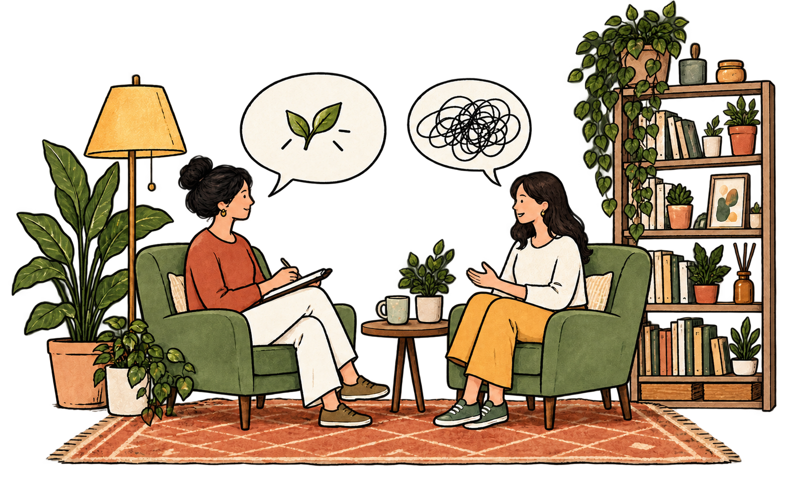
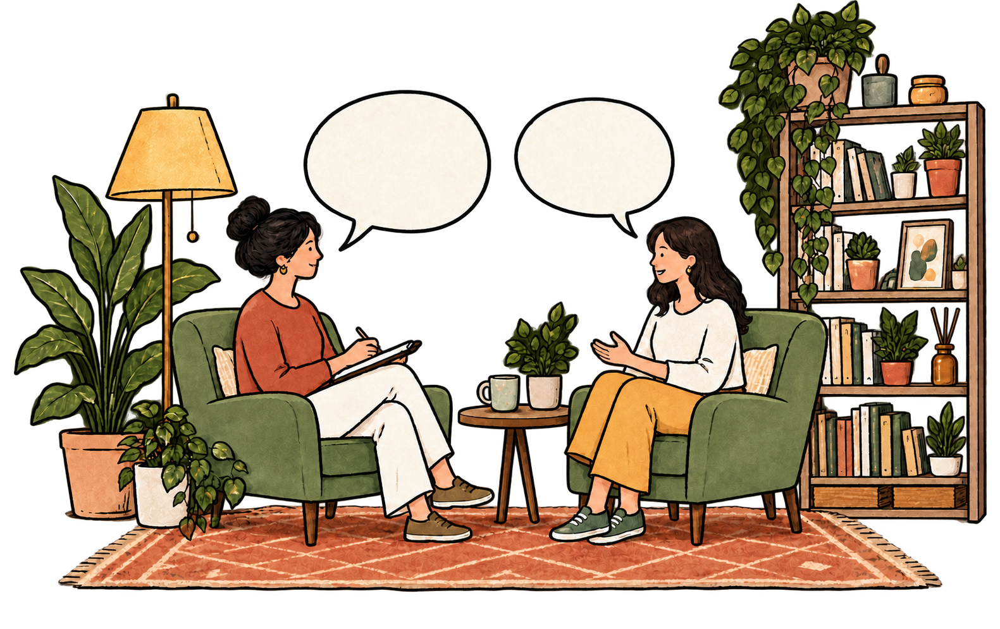

Wellbeing
Stress, anxiety, burnout, emotional overwhelm, self-care, motivation, performance and rest.
Therapy can begin with a problem, a question, a transition or simply a feeling that something isn’t quite right. You don’t need to have everything figured out before you begin.


Our lives rarely come with neatly separated concerns.
We can explore what is happening for you in the context of your experiences, relationships, circumstances and aspirations.
Stress, anxiety, burnout, emotional overwhelm, self-care, motivation, performance and rest.
Self-worth, confidence, values, beliefs, purpose, changing identities and expectations.
Family, friendships, romantic relationships, boundaries, communication, conflict and belonging.
College to work, exam journeys, career changes, breakups, setbacks, relocation and changing roles.
Meaning, intentionality, resilience, choices, behaviour change and flourishing.
I believe healing and growth are collaborative processes. Together, we understand the patterns underneath what is happening and explore ways forward that build on your strengths and values.
My practice is trauma-informed, queer-affirmative, strengths-based, collaborative, culturally responsive and lifespan-informed.
Fill out the therapy inquiry form and share whatever feels relevant.
A short video call to understand what you’re looking for and see if we might be a good fit.
We’ll explore what’s happening, what you’d like support with and what you hope therapy can offer.
Sessions are usually 50–60 minutes. Frequency can vary depending on your needs.
We’ll pause periodically to reflect on what’s changing and what feels useful next.
The first session is about understanding your concerns, history and goals for therapy. You can share as much as you feel comfortable with, and together we’ll outline a plan that suits your needs.
You don’t need a diagnosis to seek support. Therapy can be useful if you feel overwhelmed or stuck, or simply want to understand yourself better.
Yes. Sessions are available online.
Sessions typically last 50 to 60 minutes. Frequency depends on your needs and what we’re working on together.
Individual sessions are typically ₹1200–₹1500 per session, depending on availability and current capacity. A reduced fee of ₹800–₹1000 is available for competitive exam aspirants who are currently not working. For NRI clients, sessions are ₹1500–₹2000.
A limited number of sliding-scale slots may be available based on financial need. These are often full, and a short waitlist may apply.
Yes, with limited exceptions for risk of serious harm, legal requirements and professional supervision. Information shared in supervision is de-identified. Confidentiality and its limits are discussed in detail before work begins.
Yes. Therapy is voluntary. You can pause or end it, and we can have a closing session to review your progress and next steps.
Prachiti does not provide crisis or emergency support. If you are in immediate danger, contact local emergency services. For other urgent support, see the crisis resources.